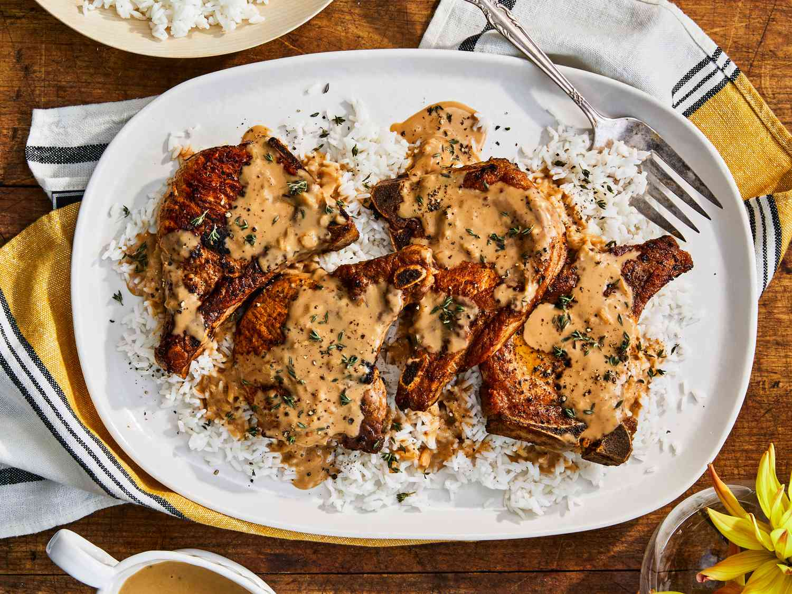

Porkchops with Rice Recipe

One pot porkchops with rice!
Designed to make your mouth water. Quick and easy to make and goes down a treat
Ingredients
- Porkchops
- Rice
- Salt and Pepper
- Seasonings of choice
- Bell Pepper
- Vegetable Oil
- Vegetable Broth
Instructions
- Preheat oven
- Season Porkchops
- Boil Rice in vegetable broth
- Add porkchops on top of rice
- Bake in oven